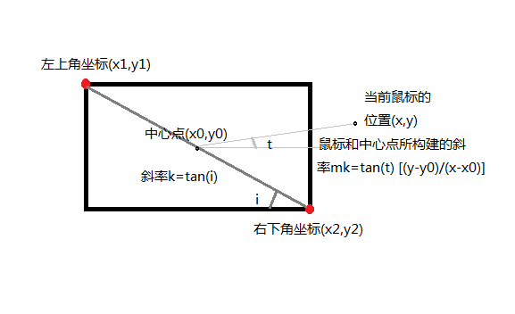

利用jQuery简单实现鼠标各方为移入
走廊效果最关键的一点是判断出究竟是从哪个方向进入或则出去的， 如下图所示，本函数是通过比较两个斜率k和mk之间的关系就可以判断出是上下 进出还是左右进出，其中左右的斜率mk始终在[k,-k]这个范围内， 而上下的斜率mk则不再[k,-k]这个范围内，最后再由鼠标当前的 位置和中心点的位置做出准确的判断。

最后的动画效果采用的是jQuery的自定义动画animate，通过变化要滑动的元素的left和top样式实现。其js代码如下：
(function(){
(function($){
var dirs = ['top','right','bottom','left'];
var imgDirs,moveInF,moveInC;
var imgMOve = {
//初始化插件，并获取初始值
init:function(opt){
var opts = opt || {};
moveInF = opts.moveInF;
moveInC = opts.moveInC;
this.giveAnimate();
},
checkDire : function(element,e){
var x1,y1,x0,y0,x2,y2;
//这个方法返回一个矩形对象，包含四个属性：left、top、right和bottom。分别表示元素各边与页面上边和左边的距离。
var rect = element.getBoundingClientRect();
//当检测不到rect.width时，给它赋值
if(!rect.width){
rect.width = rect.right - rect.left;
}
//当检测不到rect.height时，给它赋值
if(!rect.height){
rect.height = rect.bottom - rect.top;
}
//检测左上角的坐标
x1 = rect.left;
y1 = -rect.top;
//检测右下角的坐标
x2 = rect.left + rect.width;
y2 = -(rect.top + rect.height);
//中心点的位置（）
x0 = rect.left + rect.width/2;
y0 = -(rect.top + rect.height/2);
//计算对角线斜率
var k = (y1 - y2) / (x1 - x2); //表示斜率（左上和右下）
var range = [k,-k];
var x = e.clientX; //窗口距鼠标的x轴位置
var y = -e.clientY;//窗口距鼠标的y轴位置
//鼠标和中心点所构成的斜率
var mk = (y - y0)/(x - x0);
//如果斜率在range范围内，则鼠标是从左右方向移入移出的
if (isFinite(mk) && range[0] < mk && mk < range[1]) {
//根据x与x0判断左右,并返回值
return x > x0 ? 1 : 3;
} else {
//根据y与y0判断上下,并返回值
return y > y0 ? 0 : 2;
}
},
//根据判断给动画
giveAnimate : function(){
moveInF.on('mouseenter',function(){
var e = window.event||arguments[0];
var _that = this;
//判断方向
imgDirs = imgMOve.checkDire(_that,e);
//调用动画
imgMOve.setAnimate(_that,'in',dirs[imgDirs]);
}).on('mouseleave',function(){
var e = window.event||arguments[0];
var _that = this;
//判断方向
imgDirs = imgMOve.checkDire(_that,e);
//调用动画
imgMOve.setAnimate(_that,'out',dirs[imgDirs]);
});
},
//动画
setAnimate : function(_that,which,dirs){
var inOutMove ={
left:{
left:'-100%',
top:'0%'
},
right:{
left:'100%',
top:'0%'
},
top:{
top:'-100%',
left:'0'
},
bottom:{
top:'100%',
left:'0'
}
};
var num;
//判断当前是哪一个图片
moveInF.each(function(index){
if(moveInF.get(index) == _that){
num = index;
}
});
if(which == 'in'){
if(dirs=='left'||dirs=='right'){
moveInC.eq(num).css(inOutMove[dirs]).animate({
left:'0%'
},250);
}else{
moveInC.eq(num).css(inOutMove[dirs]).animate({
top:'0%'
},250);
}
}else{
moveInC.eq(num).css({top:'0%',left:'0%'}).animate(inOutMove[dirs],250);
}
}
};
window.imgMOve = imgMOve;
})(jQuery);
//对封装的函数进行调用，参数为移入的元素和要滑动的元素
imgMOve.init({
moveInF : $('.gallery_ul ul li'),
moveInC : $('.gallery_ul ul li span')
});
})();
效果展示：
- 滑动的元素1
- 滑动的元素2
- 滑动的元素3
- 滑动的元素4
- 滑动的元素5
- 滑动的元素6